Blood Pressure Manual
Digital Blood Pressure Monitor
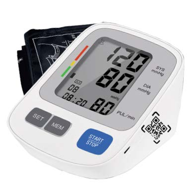
MODEL: YR-BT23
Instruction manual
Table of Contents
- Introduction 3
- Product Structure 4
- Safety Information 5
- About Blood Pressure 8
- Specifications 10
- How to use
- How to use the arm cuff 11
- Measure blood pressure accurately 13
- Common factors responsible for error in measurement 13
- How to measure blood pressure 14
- How to use the memory function 14
- To display the measurement values 15
- To delete all values stored in the memory 15
- System setup of User, Time and Date function 16
- Baltery Installation / Replacement 15
- Troubleshooting 20
- Care and Maintenance 22
- EMC Declaration 24
- Warranty Information 30
Introduction
- Thank you for purchasing
 @ Yourpal Fully Automatic Upper Arm Digital
Blood Pressure Monitor.
@ Yourpal Fully Automatic Upper Arm Digital
Blood Pressure Monitor. - The device uses the oscillometric method of blood pressure measurement. It means the device detects the movement of your blood through your brachial artery and converts your blood pressure: into a digital reading. An oscillometric monitor does nol need a stethoscope, hence the device is simple to use.
- The device could measure the systolic pressure, diastolic pressure and pulse. The components included in the box are the body. cuff and printed instruction manual. However, batteries are optional. The device is intended to be used by adults only.
- Intelligent inflation reduces the uncomfortable feeling by incorrect inflation, and shorten the measurement time, prolong the cuff's usage lifetime.
- The device stores automatically 2x99 sels of measurement value and each measurement result will be displayed on the screen. The stored data can be read conveniently by pressing the memory button. This device has biood classification index which helps to easily check your blood pressure Please read the instruction manual carefully before using the device, and keep the manual well after using it
Product Structure
- 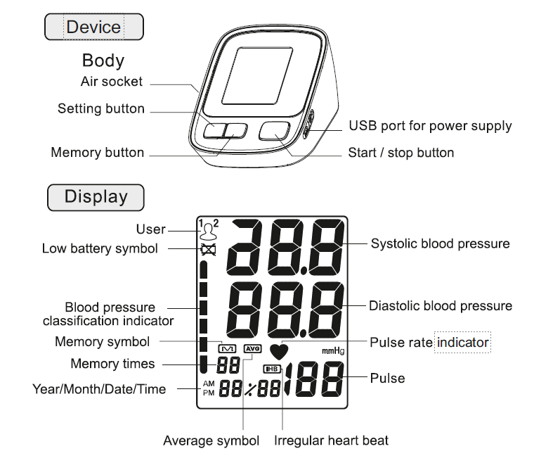
-
The accessories cuff is M size, for upper-arm circumference 22 36cm use. The cuffis reated as the applied part whichis on the left sice of the device as picture. (Only provided cuf can be used., can . ot change fo any othor brarded cuff.)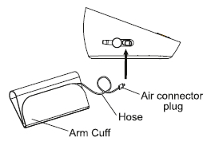
Safety Information
- To assure the correct use of the device, some basic safety measures should be followed including the precautions listed in the manual:
- Those suffering from arrhythmia, diabetes, blood circulation or apoplexy problem, please use under the physician's advice.
- Self-diagnosis of measured resull and treatment s dangerous Contact your physician for specific information about your blood pressure. Follow the instructions of your dactor.
- The device is intended 1o be used in measuring blood pressure and pulse rate for acults only and is it not recommended for reonatal baby.
- Operate the device only as intended. Do not modify, use for any other purpose without authorizaton of the manGfacturer.
- Do not disassembls or attempl to repair the device or any components as it il cauise the device 1o function erroneously.
- The swallowing of small parts like packaging bag, battery, battery cover, wrapping of cuff hose around the neck may cause suffocation.
- Ploase don't use a dilution agent, alcohol o petrol to clean 1he device. Please don't hit heavily or drop the device from ahigh place.
- Do not use the device where flammable gases (such as anesthetic gas, oxygen or hydrogen) or lammable fiquid (such as alcohol) are present
- Do not touch the output of AC adapter (when used) and the patient together. Do not plug or unplug the adapter power cord with wet hands.
- Do not use a cellular phone near the device. It may resultin operational failure.
- Please avoid using in high radiant area in order to make your measuring data correctly.
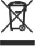 WARNING:
Do not dispose of the electrical appliances as unsorted minicipal waste, use separate collection facilities. Contact your local government for information regarding collection systems available. If electrical appliances are disposed in landfills or dumps, hazardous substance can leak into the groundwater and get into the food chain, damaging your health and well-being- Classification
- Internally powered equipment;
- Type BF applied part
- Prolection against ingress of water. IPX0,
- Not category AP / APG equipment,
- Mode of operation: Continous operation:
Symbol descriptions
| WARNING: This alert identifies hazards that may cause swrious persunal injury or death | |
| Type BF applied part | |
| Manufacturer | |
| Specifies serial number | |
| CE Mark: Confirms to essential requirements of the Medical Device Directive 93/42/EEC. | |
| 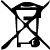 | DISPOSAL: Do not dispose Ihis device as an unsorted municipal waste. Gollection of such waste separately for special treatment is necessary, |
| Keepdry | |
| Follow instructions for use | |
| CAUTION: Consult accompanying documents |
About blood pressure
- What s blood pressurc?
- Blood circulation is responsible for supplying the body with oxygen Blood pressure
is the pressure exerted on the arteries.
The systolic blood pressure value (higher pressure or top value) represents the blood pressure praduced by contraction of the heart muscle.
The diastolic blood pressure value (lower pressure or lower value) represents the blood pressure produced by relaxation of the heart muscle.
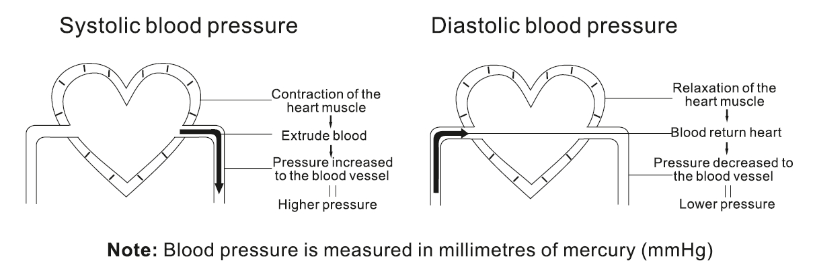
- WHO blood pressure classification?
- Standards for assessment of high blood pressure, without regard 10 age, have been
established by the World Health Organization
(WHO).
According to the blood pressure classification by the WHO/ISH SYS lower than 100mmHg (13.3kPa) is considered as hypotension.
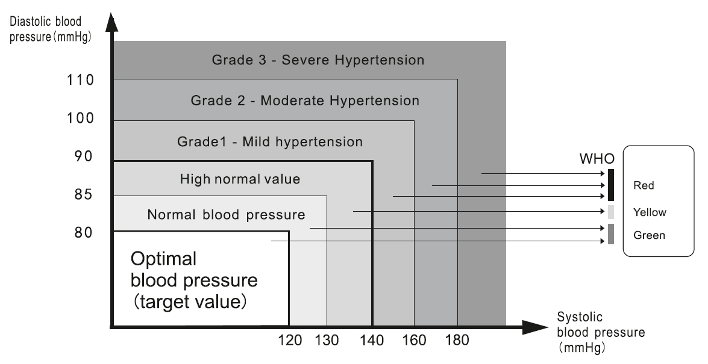
- Classifcation of blood pressure
- Aftereach measurementis completed, the LCD display will show your position automatically on the six segments of the bar indicator which corresponds to WHO Blood Pressure indicator.
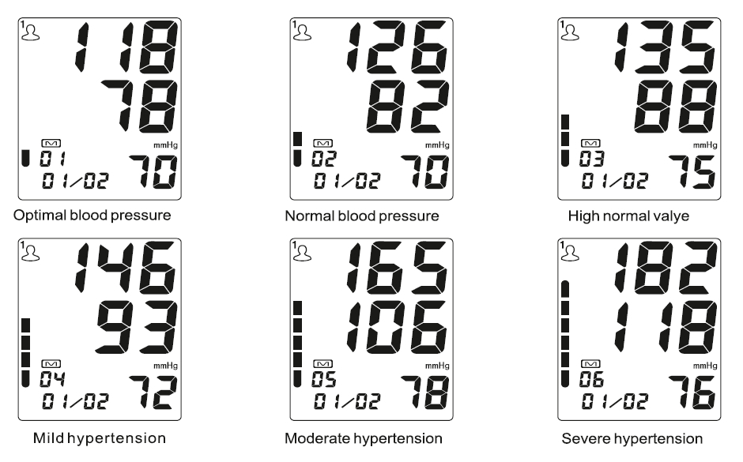
Specifications
|
How to use
How to use the arm cuft
|
- The following effects may be caused while using the arm cuff:
- There may be blood flow interference and resultant harmful injury to the patient caused by continuous cuff pressure due to kinking of connecting tube.
- The application of arm cuff over a wound can cause further injury.
- The application of arm cuff and its pressurization on any limb whereintravascular
- The application of arm cuff and its pressurization on any limb whereintravascular access or therapy or an arterio-venous (A-V)stentis present could resultininjury lo the patientdue to temporary interference to blood flow.
- The application of arm cuff and ts pressurization on the arm on the side of a mastectomy.
- The pressurization of the arm cuff can temporarily cause loss of function of simultaneously used monitering ME EQUIPMENT onthe same limb. In this situation use the right cuff, otherwise it won't work,
- Note:
- Only use clinically approved arm cufs.
- A loose cuff or an exposed bladder causes false reading
- With repeated measurements, blood starts to accumulate in the arm which can lead to false reading
- Blood pressure measurements should be repeated after gap ©of 1-2 mins or after the arm has been lifted up in order to allow the accumulated blood to flow away
- To measure blood pressure accurately
- Please remain silent for 5-10 minctes. Avoid eating, drinking alconol, smoking, exercising and bathing before taking the measurement as all these factors will influence the measurement result
- Remove any garment that fis closely o your upper arm.
- Always measure on the same arm (normally left)
- Take measurement regularly al the same time of the day, as blood pressure changes even during the day.
- Please maintain the posture of: legs uncrossed, feet flat on the floor, back and arm supported while normally using the product.
- Common factors responsible for error in measurement
- Any efforts made by the patient lo support their arm can raise the blood pressure
- Ensure that you are in a comfortable, relax posiion. Do not make any arm movement during measurement. Use a cushion for support, if necessary.
- If the position of the arm artery is below or above the heart level, afalse reading will be obtained
|
- To discontinue the ongoing measurement
- When it is necessary to interrupt the blood pressure measurement for any reason (eg. the patient feels unwell) press the START/STOP button. The device will automatically decrease the arm cuff pressure.
- How to use the memory function
- The device stores the blood pressure and the pulse rate in the memory after completing each measurement. It can automatically store 99 sets of measurement values for two users. The oldest record is deleted to save the latest measurement value for each user reading reaches more than 99 sets.
- To display the measurement values
- When the device is power off, press the "MEM" button to view the last three measurement average value. Press the "MEM" button again to view the last measurement value. Press the "MEM" button repeatedly and each time it will show the subsequent measurement value one by one and the date and time will display alternately.
- 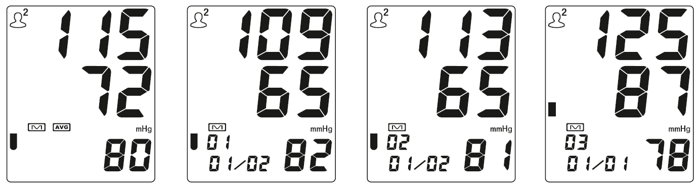
- To delete all values stored in the memory
- To permanently remove all stored memories, please enter into the memory reading mode. Press and hold the "SET" button until "CL NO" is displayed on the screen. Press the "SET" button again to choose "CL YES" to clear all the memories. Press the START/STOP button to save the setting.
System setup of User, Time and Date function
User setting:
Press the "SET" button to turn on the device. The screen will display U1 or U2. Press the "SET" button again to change U1 or U2. Press the START/STOP button to save the setting. User setting
Press the "SET" button to turn on the device. The screen will display U1 or U2. Press the "SET" button again to change U1 or U2. Press the START/STOP button to save the setting. User setting
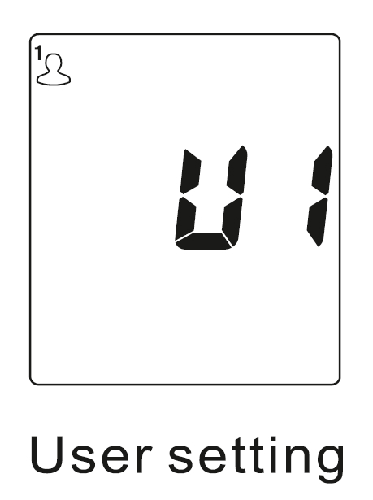
Year setting:
Press and hold the button SET when power off until the year show on display. The screen will display and flash 20XX. Each time you press "MEM" button, the year will increase by one. You can choose from 2017 to 2050. Press "SET" button to confirm the year and save your setting. It will then enter the month and date setting Year setting mode.
Press and hold the button SET when power off until the year show on display. The screen will display and flash 20XX. Each time you press "MEM" button, the year will increase by one. You can choose from 2017 to 2050. Press "SET" button to confirm the year and save your setting. It will then enter the month and date setting Year setting mode.
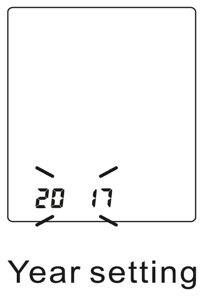
Month and Date setting:
The screen will display month and date, and keep flashing on month. Each time you press "MEM" button, the month will 02 increase by one. You can choose from 1 to 12. Month setting Press "SET" button to confirm the month. it will then enter the date setting mode. Each time you press "MEM" button, the date will increase by one. The date will keep changing from 01 to 31 Press "SET" button when you confirm the date. It will then enter the time setting mode.
The screen will display month and date, and keep flashing on month. Each time you press "MEM" button, the month will 02 increase by one. You can choose from 1 to 12. Month setting Press "SET" button to confirm the month. it will then enter the date setting mode. Each time you press "MEM" button, the date will increase by one. The date will keep changing from 01 to 31 Press "SET" button when you confirm the date. It will then enter the time setting mode.
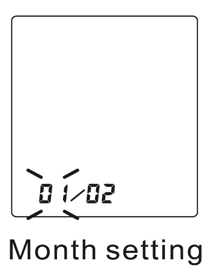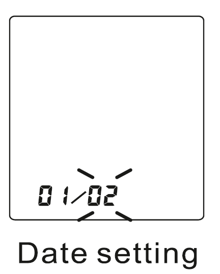
Time setting:
The screen will display hour and minute and will keep flashing on the digits of hour. Each time you press "MEM" button, the hour will increase by one. You could choose from 0 to 23. Press "SET" button when you confirm the hour. The digits of minute will then start to flash. Each time you press the "MEM" button, the hour will increase by one. The minute will keep changing from 00 to 59. Press "SET" button when you confirm the minute. It will then enter into the 12/24 time system mode.
The screen will display hour and minute and will keep flashing on the digits of hour. Each time you press "MEM" button, the hour will increase by one. You could choose from 0 to 23. Press "SET" button when you confirm the hour. The digits of minute will then start to flash. Each time you press the "MEM" button, the hour will increase by one. The minute will keep changing from 00 to 59. Press "SET" button when you confirm the minute. It will then enter into the 12/24 time system mode.
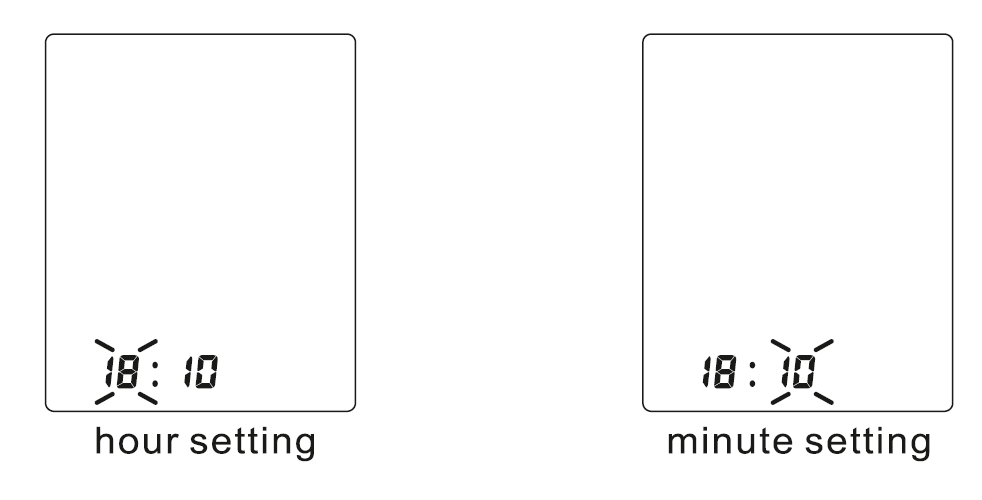
12/24 time system setting:
The screen will display 12 or 24. Press the "MEM" button to change 12 or 24 as you like. Press "SET" button to exit setting mode and save the settings.
The screen will display 12 or 24. Press the "MEM" button to change 12 or 24 as you like. Press "SET" button to exit setting mode and save the settings.
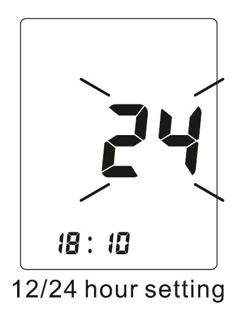
Note:
When you press the "MEM" button for a long time, the value will quickly change during setting process. You can stop the setting anytime when you press the START/STOP button to save the current setting and turn off.
When you press the "MEM" button for a long time, the value will quickly change during setting process. You can stop the setting anytime when you press the START/STOP button to save the current setting and turn off.
Battery Installation/Replacement
- Battery Installation
- Remove the battery cover from the battery compartment.
- Insert four AA powerful batteries into the compartment and ensure each battery is in the proper direction.
- Replace the battery cover.
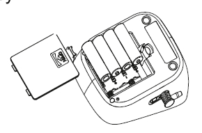
- Low battery and Replacement
- When power on, if the low battery symbol "" appears on the device, immediately replace the old batteries with new batteries otherwise the unit will stop working. Do not mix the old and new batteries.
- CAUTION
- Please use 4pcs AA identical 1.5V alkaline batteries.
- Do not use the batteries beyond their expiry date.
- Never leave any low battery in the battery compartment and please remove the batteries if you do not need to use the device for long time since it may leak and cause damage to the unit.
- Do not touch the live end of the battery and patient simultaneously while changing the batteries.
- Warning:
Dispose of the battery in accordance with all federal, state and local laws. To avoid fire and explosion hazard, do not burn or incinerate the battery.
- USB POWER SUPPLY
- This device can use USB as power supply when you don't use batteries. Please insert the USB cable as the picture showed. The optional AC adapter should comply with the requirement of IEC60601-1:2005, the output is DC 5V, 500mA.
- Please remove all the batteries before using the AC adapter.
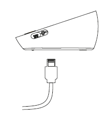
Troubleshooting
- If you have trouble using the unit please check the following errors first.
|
Trouble removal
|
| Please contact our central helpline or local distributor in case you cannot resolve the problem. Do not dismantle device urself. |
Care and Maintenance
- Keep the device in the storage case when not in use.
- Clean the device with a soft dry cloth.
- Do not use any abrasive or volatile cleaners.
- Never immerse the device or any component in water.
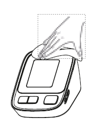
- Make sure the monitor is off prior to cleaning, a mixture of distilled water and 10 percent bleach could be used.
- When using a spray bottle, moisten a soft cloth towel with the bleach or detergent mix until it is fully saturated. Squeeze any excess moisture from the cloth to avoid any dripping or potential | over saturation of the cuff.
- Wipe all surfaces of the cuff thoroughly. Make sure to clean the inside and outside of the cuff. Be cautious not to get any moisture in the main device.
- Use a dry cloth and gently wipe away any excess moisture that may remain on the blood pressure cuff. Lay the cuff flat in an unrolled position and allow the cuff to dry.
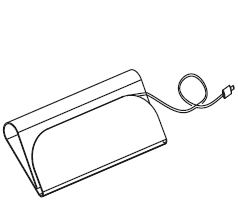
Do not
clean the body and
cuff with naphtha, thinner or
gasoline etc.
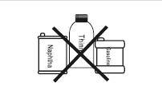
Do not wet the
cuff or attempt
to clean the cuff with water.
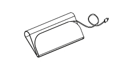
Store the device
in a clean
and dry location. Don't subject
the device to extreme hot or
cold temperature, humidity
and direct sunlight.

Remove the
batteries if the
device will not be used for 3
months or longer.

We won't
be
responsible for any quality problem if you don't
care and maintain the product as instructed.
Warranty Information
Statement
- The intended use: the unit is intended to be used by adults at home or medical center to measure blood pressure and pulse rate from the upper arm.
- Warning against servicing and maintenance while the medical equipment is in use.
- Blood pressure measurements determined with this device are equivalent to those obtained by trained observer using the cuff/ stethoscope auscultatory method, within the limits prescribed by the American National Standard, manual, electronic, or automated sphygmomanometers.
- The risk of patient and user can be lowered to acceptable level.
- Substitution of a cuff different from that supplied might result in measurement enror.
- Specifications are subject to change without notice because of improvement in performance.
- This device carries a warranty for two years against any manufacturing defect as per Co's policy.
- For repair under this warranty our authorized service agent must be advised of the fault within the period of the warranty. This warranty covers parts and labor only under normal operations. A transportation or freight fee that may be incurred will be the owner's responsibility. Any defect resulting from natural causes, eg. flood, hurricane etc, is not within this warranty. This warranty does not cover damage incurred by use of the device not in accordance with the instructions, accidental damage, or being tampered with or serviced by unauthorized service agents.
- Monitor subjected to misuse, abuse, and neglect of these manual content, non - instructional purposes; unauthorized repairing or modifications will be excluded from this warranty. This warranty specifically excludes expendables and consumables, for example batteries. All warranty claims must be directed to the distributor responsible for the sale of the device. The content of this warranty is subject to change without further notice.
- The effects of degraded sensors and electrodes, or loosened electrodes, that can degrade performance or cause other problems.
- Periodic check: Sensitive measuring devices must be checked from time to time for accuracy and leakage, we therefore recommend that the performance should be checked every 2 years and after maintenance and repair.
- The device requires no calibration. It is not repairable and contains no user serviceable parts.
- For any assistance contact our Central Helpline: 9773306267